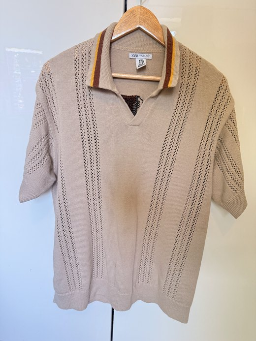
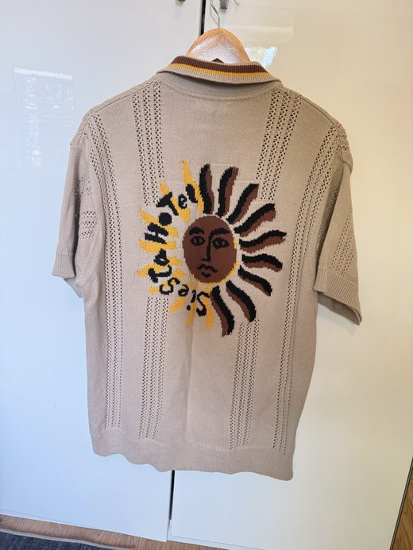
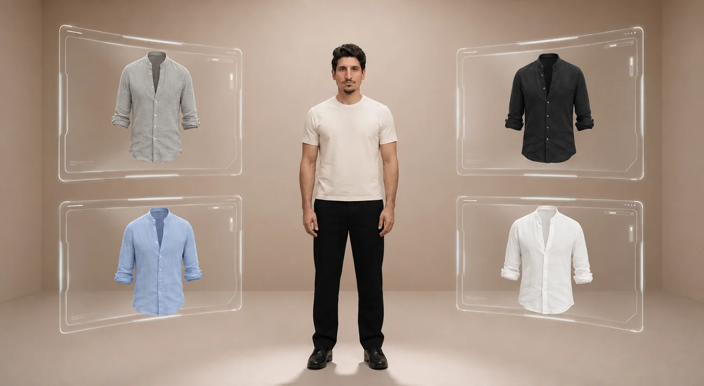
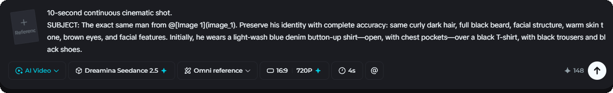

Det är inte svårt, och gör du rätt kostar en video ungefär 20 till 30 kronor. Men nästan alla missar en av de tre sakerna som avgör om resultatet blir användbart eller bara konstigt. Här är de tre, och vad du faktiskt ska göra med dem.
AI:n måste veta hur din produkt faktiskt ser ut. Ge den tydliga bilder som visar produkten från flera vinklar, inte bara en snygg bild framifrån.
Ju bättre referensbilder, desto mindre hittar AI:n på. Suddiga eller mörka bilder ger en produkt som inte riktigt är din.
Så här såg det ut när jag gjorde klippet i videon. Två vanliga mobilbilder på en piké, fram och bak:


Inget studiobygge, ingen fotograf. Två bilder in, en video ut.
Prompten styr både kvaliteten och rörelsen. Allt du inte beskriver kommer AI:n att gissa fram, och gissningarna är sällan det du ville ha.
Beskriv därför tre saker separat: hur karaktären rör sig, hur produkten syns, och vad kameran gör. Ju mer specifik du är om rörelsen, desto mer ser klippet ut som riktig reklam.
Här är hela prompten bakom öppningsklippet i videon, ordagrant. Den är på engelska, och det är med flit: modellerna förstår engelska bäst.
10-second continuous cinematic shot. SUBJECT: The exact same man from @[Image 1](image_1). Preserve his identity with complete accuracy: same curly dark hair, full black beard, facial structure, warm skin tone, brown eyes, and facial features. Initially, he wears a light-wash blue denim button-up shirt-open, with chest pockets-over a black T-shirt, with black trousers and black shoes. SCENE: The futuristic holographic showroom from @[Image 2](image_2): warm beige walls, soft cinematic lighting, clean cream floor, and four transparent curved holographic panels surrounding him. The panels contain four linen shirts: upper-left gray, upper-right black, lower-right white, lower-left blue. Static wide camera; preserve the original composition. ACTION: The man naturally turns his torso and physically touches each glass panel with his nearest hand. Exact order: upper-left gray -> upper-right black -> lower-right white -> lower-left blue. The shirt must remain completely still until his fingertips touch the panel. Upon contact, a small white glow appears beneath his fingertips and sends a subtle circular ripple across the glass. Only after this reaction, the shirt smoothly leaves the panel, flows toward him, and realistically wraps around his torso and arms, replacing his current upper clothing. He briefly turns toward the camera and showcases each completed shirt for approximately one second, then naturally reaches for the next panel. TIMING: 0-2.5s: touch gray, transformation, showcase. 2.5-5s: touch black, transformation, showcase. 5-7.5s: touch white, transformation, showcase. 7.5-10s: touch blue, transformation, final front-facing pose. Smooth realistic body movement, clear fingertip contact, interactive holographic response, realistic flowing fabric, seamless wardrobe replacement, and one transformation at a time. No clothing movement before contact, no remote activation, no teleporting, no cuts, no camera movement, no identity changes, no extra limbs, no skipped or simultaneous transformations.
Referensbilden på miljön som prompten pekar på som @[Image 2]:

@[Image 1] för personen, @[Image 2] för miljön. Då vet modellen exakt vad den ska hålla fast vid.Det här är det som flest missar. Varje modell är bra på en specifik sak, och matchar du fel uppgift med fel modell spelar det ingen roll hur bra prompten är.
Ska du göra reklam för en produkt är realism det du är ute efter, och då väljer du modellen som är byggd för det. Så här ser det ut när modellen är vald, klippen i videon gjordes med Seedance 2.5 inne i Dreamina:

Realism. Det är den jag använder till produktklipp och reklam, och den jag rekommenderar om du säljer något. Den kommer från ByteDance.
Mitt val för reklamTrovärdig rörelse. Den är också bra på att byta ut personer eller föremål i ett klipp du redan har. kling.ai
Rörelse och bytenEn digital version av dig själv som kan läsa vilket manus som helst, och översätta din video till andra språk med matchande läpprörelser. heygen.com
Digital dubbelgångareDen här sidan är länken från videon, och jag bygger ut den med det jag lovade. Spara länken, den uppdateras på samma adress. Det som kommer:
Jag hjälper dig komma igång, från första frågan till färdig rutin. Hör av dig så tar vi reda på om och var AI passar för dig eller ditt företag.
Boka ett strategisamtal